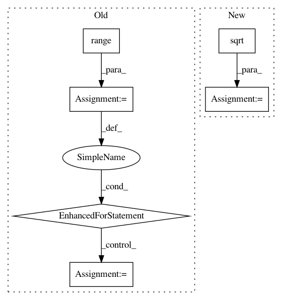

c99295e1903952b3b806c4fd641e28f852b17c36,autokeras/utils.py,ModelTrainer,train_model,#ModelTrainer#,101
Before Change
flow = self.datagen.flow(self.x_train, self.y_train, batch_size)
else:
flow = None
for _ in range(constant.MAX_ITER_NUM):
if constant.DATA_AUGMENTATION:
self.model.fit_generator(flow, epochs=constant.EPOCHS_EACH)
else:
self.model.fit(self.x_train, self.y_train,
batch_size=batch_size,
epochs=constant.EPOCHS_EACH,
verbose=self.verbose)
loss, _ = self.model.evaluate(self.x_test, self.y_test, verbose=self.verbose)
if self._converged(loss):
break
return self.minimum_loss
def extract_config(network):
After Change
terminator = EarlyStop()
lr_scheduler = LearningRateScheduler(lr_schedule)
lr_reducer = ReduceLROnPlateau(factor=np.sqrt(0.1),
cooldown=0,
patience=5,
min_lr=0.5e-6)
callbacks = [terminator, lr_scheduler, lr_reducer]
if constant.LIMIT_MEMORY:
config = tf.ConfigProto()
config.gpu_options.allow_growth = True
sess = tf.Session(config=config)
In pattern: SUPERPATTERN
Frequency: 4
Non-data size: 6
Instances
Project Name: jhfjhfj1/autokeras
Commit Name: c99295e1903952b3b806c4fd641e28f852b17c36
Time: 2018-04-18
Author: jhfjhfj1@gmail.com
File Name: autokeras/utils.py
Class Name: ModelTrainer
Method Name: train_model
Project Name: geekcomputers/Python
Commit Name: 139259ac8ac83160502cbb896371ce4fa4027361
Time: 2019-10-10
Author: ml.smiley3@gmail.com
File Name: primelib/primelib.py
Class Name:
Method Name: sieveEr
Project Name: ray-project/ray
Commit Name: 244aafdcf89ae814975c8c4e3faf0bd4995c7878
Time: 2020-09-05
Author: sven@anyscale.io
File Name: rllib/utils/exploration/tests/test_curiosity.py
Class Name: OneHotWrapper
Method Name: observation